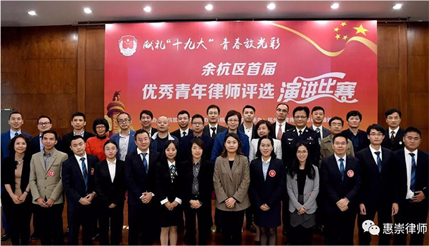
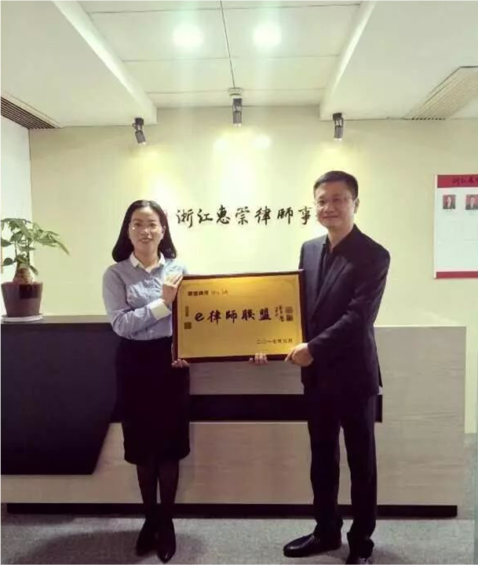
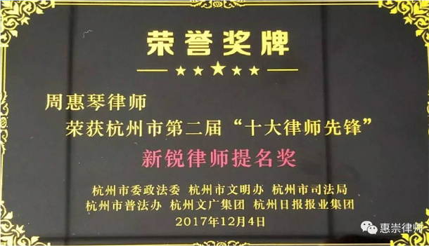
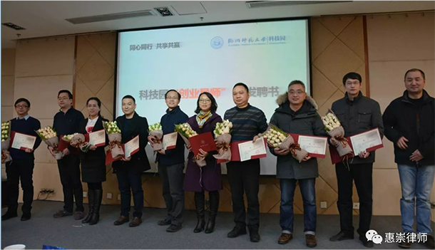
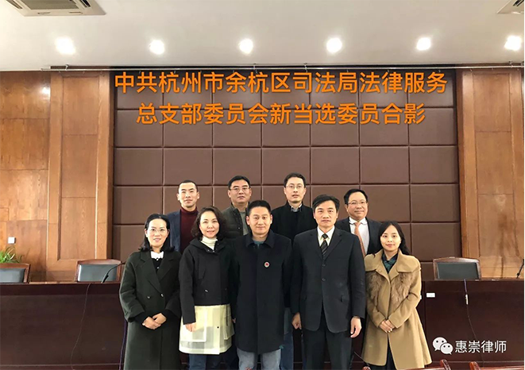
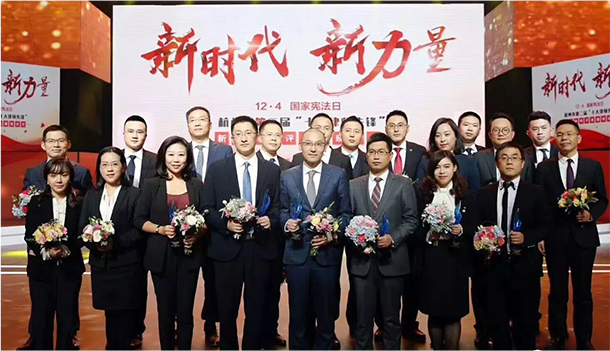
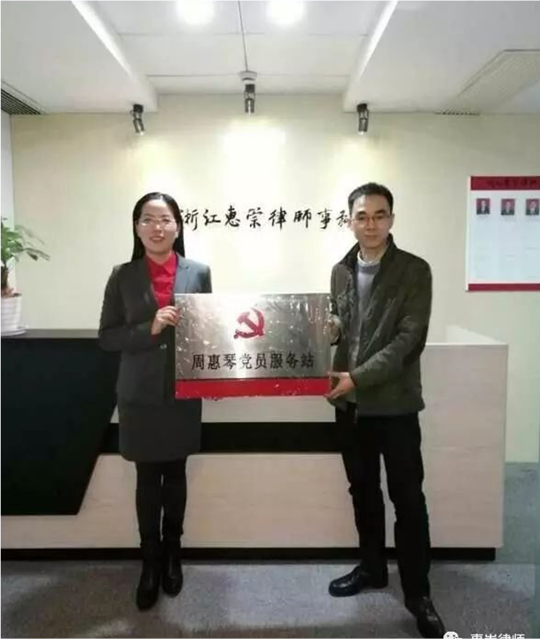

惠崇公益
huichong public welfare







惠崇所成为西湖区人民法院合作的特约调解组织
惠崇所成为余杭区人民法院合作的特约调解组织
惠崇所成为未来科技城海智中心城园汇平台合作的法律服务机构
惠崇所成为都市快报《律师来了》的合作签约律所
惠崇所成为余杭区信息产业协会的理事单位
惠崇所成立党支部
惠崇所被余杭区组织部授予“周惠琴党员服务站”
惠崇所成为e律师联盟的成员律所
惠崇所成立余杭街道女律师妇女维权工作站
惠崇所成为浙江工商大学教育实习基地
惠崇所成立律师调解室
周惠琴律师荣获“浙江省模范党员律师”称号
周惠琴律师荣获余杭区“十大优秀青年律师”称号
周惠琴荣获杭州市“十大律师先锋”新锐律师20强称号
周惠琴律师受聘浙江文澜讲堂客座讲师
周惠琴律师受聘浙江文澜讲堂客座讲师
周惠琴律师受邀中央电视台《社会与法》栏目专访
周惠琴律师当选杭州市律师协会民商委副秘书长
周惠琴律师受聘杭州电视台《开心茶馆》栏目的法律专家组成员
周惠琴律师受聘杭州市余杭区青少年普法教育活动宣讲团成员
周惠琴律师受聘杭州市人民调解员
周惠琴律师受聘杭州市余杭区人民法院特邀调解员
周惠琴律师荣获杭州市西湖区人民法院优秀特邀调解员
周惠琴律师荣获浙江省律师协会青年骨干律师
周惠琴律师荣获杭师大科技园创业导师
周惠琴律师荣获杭州市律师协会“优秀青年律师领航工程”研修班学员
周惠琴律师当选余杭街道妇联副主席
周惠琴律师当选余杭街道女律师妇女维权服务工作站负责人
周惠琴律师当选余杭区司法局总支委纪律委员
张锃磊律师荣获杭州市江干区双十佳优秀社区律师
韩艳律师荣获杭州市律协优秀通讯员